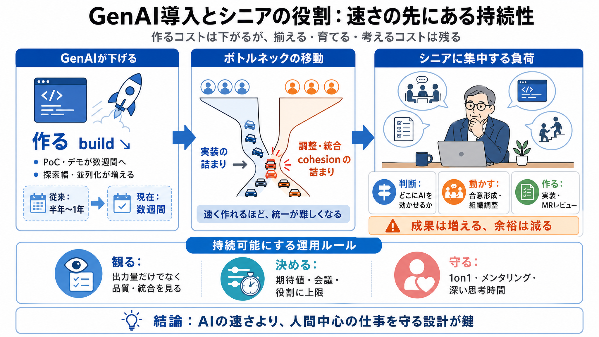

The impact of AI on software engineers in 2026: key trends. ...
### Our AI tooling survey finds concerns about mounting AI costs, more engineers hitting usage limits, and AI tools havi…

実体験からの補正
開発は速くなる。しかしシニアの役割は「より強力で、より持続しにくい」形へ変わる。
利点と負荷が同時に膨らむ構造を、現場の体感で描く。
速さの代償
技術的な制作コストは下がるのに、組織として揃えるコストは下がらない。結果として、シニアの仕事が長時間・高負荷になりやすい。
GenAIが下げる
「作る（build）」のコストを急減させる
下げない
「揃える（align）」「人に向き合う（mentoring）」のコストは残る
日本語補足（bilingual）: align（揃える）/ mentoring（メンタリング・育成）
ボトルネックの移動
ボトルネックは「エンジニアリング」から「調整と統合（cohesion）」へ移る。
速く作れるほど、統一が難しくなる。
昔
作ること自体が難しく、律速が実装側にあった
今
複数チームが短期に独自解を出し、採用・統合が摩擦化
cohesion（結束・一貫性の統合）
SDLC全域へ波及
シニアはSDLC（要件〜設計〜実装〜レビュー〜リリース）全域を見渡せるため、AI適用判断と調整の中枢に入りやすい。
その結果、戦略だけでなく実装も増える。
判断
どこにGenAIを効かせるか見抜く
動かす
提案・合意形成・組織調整を進める
作る
実装まで担う割合が増える
MR review（マージリクエストのレビュー）はボトルネック化しやすい領域として登場
提案が“デモ”へ
従来は「提案書→フィードバック→小規模PoC→チーム割当→MVP統合」で半年〜1年。
現在は薄い提案と動くPoCを数週間で作り、デモで先に合意を進められる。
| フェーズ | 従来 | GenAI後 |
|---|---|---|
| 初期合意 | スライド中心→議論→積み上げ | 動くもの（デモ）を見て前倒し |
| 期間感 | 半年〜1年 | 数週間 |
良い点: “理屈”だけでなく「動くもの」を通じて議論文化が変わる。
成果は増える
AIで作る量は増えるが、期待値の増加がその分を時間と注意で埋める。
結果として、余裕（思考・熟成・レビューの質）が生まれにくくなる。
増える
デモ回数、探索幅、同時進行（並列化）
削られる
深い思考時間、1on1、人間的ケア、メンタリング
1on1（個別面談）: “後回しできない人間中心の仕事”として位置づけられる
4つの要点
主張の芯は「作るは速いが、統合・育成・思考は削れない」。その不均衡が持続性を壊す。
i 作る↘
PoC・デモが速くなり初期合意が前倒し
ii 揃える↔
標準化・採用・統合で摩擦が増え、調整がボトルネック化
iii シニア増強
戦略だけでなく実装・会議の比重も上がり役割が膨張
iv 人間中心が先に削れる
メンタリングや深い思考が優先順位圧力で後回しになる
“成果”の取り込み
AIによる生産性向上が「出力量」として吸収されると、レビューの質や熟成のための時間が削られる。
成立しているのは実力ではなく、期待増分を時間と注意で埋めているだけになりがちだ。
入口
速く作れるため、期待が上がる
吸収
“より出している”ことで成果扱いになる
出口
余裕が消え、品質が間接的に下がりうる
シニアの役割が膨張
提案を書く → 組織を動かす → 自分で作る、までが一人に寄りやすい。
結果としてコーディング量も会議負荷も増える。
増える仕事
戦略・ビジョンの執筆負荷、GenAI専門家としての会議負荷、実装中心の手作業
増える行動
PoCを捨て前提で複数試す、並行探索が増える
ここでの“専門家”とは、適用判断・調整・説明が集約される状態を指す。
AIが悪いのか？
AI導入そのものを否定しているのではない。利点を認めたうえで、負荷を増やすのは期待設計・会議体・評価指標などの運用要因でもある、という補正が可能だ。
作者の立場
利点はあるが、役割の持続性が失われつつあると警告
補足（読み手）
AI能力差より、ガバナンスと測定設計で負荷が変わりうる
最後に残る問い
持続性の鍵は、AIの“速さ”ではなく、1on1・メンタリング・深い思考時間を守るルール設計にある。
単なる危機論にせず、運用改善へ具体化する必要がある。
観る
出力量ではなく、熟成・レビュー・統合の質を見る
決める
会議体・期待値・役割配分に上限と責任を置く
守る
人間中心の仕事を“後回ししない”制度にする
参照（要約内の用語）
原文内で中心的に使われる概念を、読みやすい形で整理する。
### Our AI tooling survey finds concerns about mounting AI costs, more engineers hitting usage limits, and AI tools havi…
If your team has accumulated AI-generated code that needs professional review and restructuring, MetaCTO’s [Vibe Code Re…
# How are engineering leaders approaching 2026 AI tooling budgets? 2026 brings bigger AI budgets, higher adoption, more …
# AI Software Development Costs 2026: Enterprise Spending, TCO, and ROI Analysis. Featured image for “AI Software Develo…
Budgets for AI tools are set to nearly double in 2026, with companies already allocating 1–8% of revenue to AI productiv…